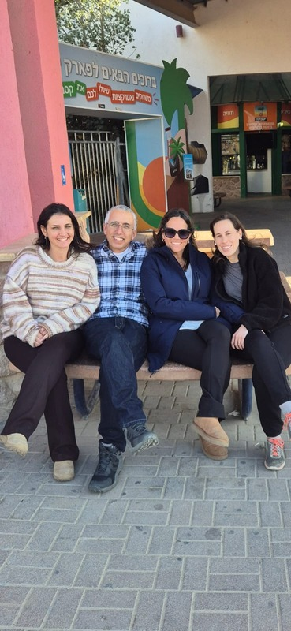

וידאו
סרטון פתיחה
הסרטון מציג את המסע לפולין, המתן מעט עד להתחלת הסרטון.
מפה ותמונות
מפת המסע
צוות המשלחת
הצוות שהוביל את המסע

תודות
אופק שחר, ארגון התמונות
מאור וקנין, עיצוב ופיתוח האתר
"המסע לפולין הוא לא רק ביקור במקומות, אלא מפגש עם זיכרון, זהות ואחריות."